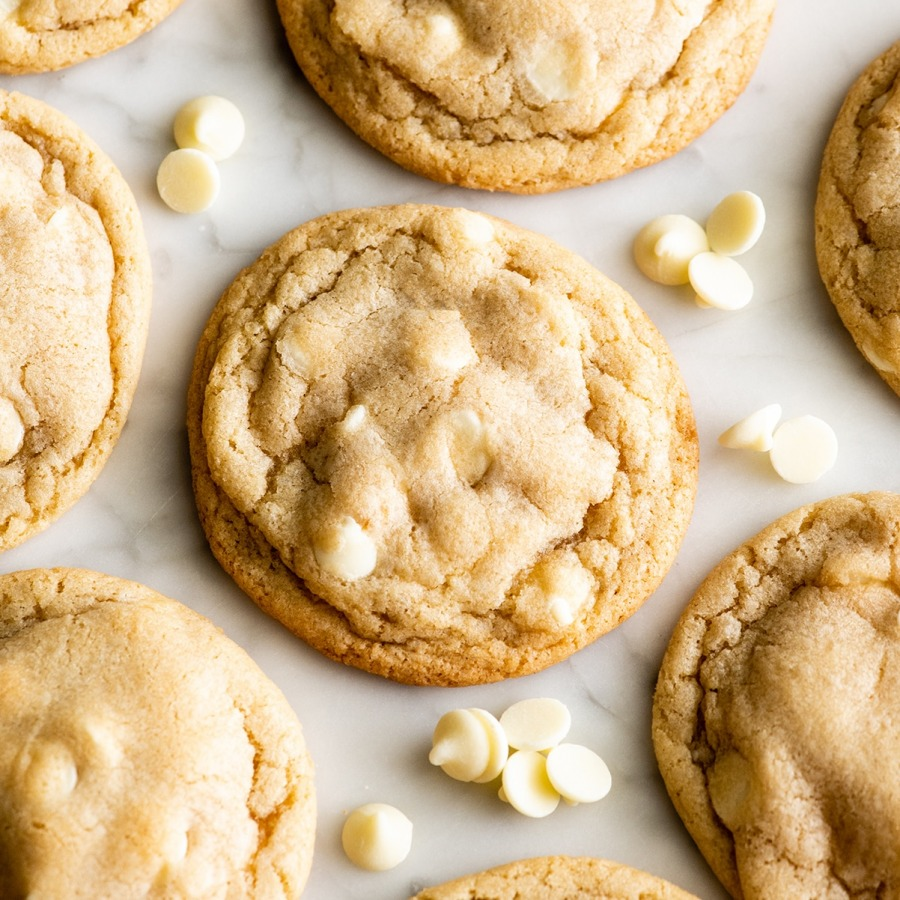

Galletas de chocolate blanco

Las galletas de chocolate blanco son una variante deliciosa de las galletas tradicionales. Su exterior ligeramente crujiente y su interior tierno las convierten en una opción ideal para el desayuno, la merienda o para acompañar una taza de café. Además, puedes añadir frutos secos o trozos de fruta deshidratada para darles un toque especial.